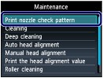

Printing the Nozzle Check Pattern
Printing the Nozzle Check PatternPrint the nozzle check pattern to determine whether the ink ejects properly from the print head nozzles.
 Note Note
|
You need to prepare: a sheet of A4 or Letter-sized plain paper
Make sure that the power is turned on.
Make sure that one or more sheets of A4 or Letter-sized plain paper are loaded in the Cassette.
Open the Paper Output Tray gently.
Print the nozzle check pattern.
(1) Press the Setup button.
The setup menu screen will appear.
(2) Select Maintenance , and press the OK button.
The Maintenance screen will appear.
(3) Select Print nozzle check pattern, and press the OK button.

The confirmation screen will appear.
(4) Select Yes, and press the OK button.
The nozzle check pattern will be printed and two pattern confirmation screens will appear on the LCD.
Examine the nozzle check pattern.
See Examining the Nozzle Check Pattern.